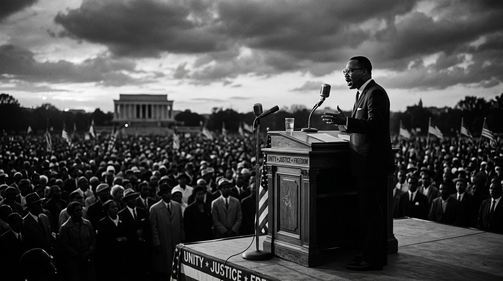

August 11, 2026
The Rhetoric of Liberty: How Civil Rights Movements Shaped Modern Oratory

Throughout history, the human voice has been the most powerful catalyst for social and political transformation. Nowhere is this more evident than in the struggle for civil rights, where speakers and activists mobilized millions, challenged centuries of oppression, and reshaped the legal and moral landscapes of nations. By analyzing the public speaking styles and techniques of historical civil rights leaders, we gain valuable insights into the power of spoken words to influence public opinion and drive systemic change.
At the center of civil rights oratory stands the master class of rhetoric delivered during the mid-20th century. Figures like Martin Luther King Jr. utilized a unique blend of prophetic cadence, constitutional arguments, and universal moral values to capture the hearts and minds of the public. His speeches, characterized by their rhythmic repetition (anaphora) and deep metaphorical framing, bridged the gap between different demographics, uniting them under a shared vision of justice. King did not merely present facts; he painted a picture of a future that felt both inevitable and necessary, demonstrating the power of inspirational storytelling in public debate.
In contrast, speakers like Malcolm X brought a different, yet equally powerful, rhetorical strategy. His speeches were characterized by direct, logical analysis, sharp wit, and uncompromising truth. By using conversational English and striking analogies, he dissected the systemic inequalities of the era, challenging the status quo and urging immediate action. Malcolm X showed that public speaking could be used to disrupt comfortable complacency, illustrating that persuasion is not always about consensus, but often about provoking critical self-examination and structural critique.
The Legacy of Protest Oratory
The lessons from historical protest oratory remain vital for modern activists and public speakers. First, the power of speech lies in its moral clarity. Effective speakers align their arguments with universal human values such as dignity, justice, and equality. Second, delivery matters; the tone, rhythm, and passion of the speaker carry the emotional weight necessary to inspire action. Finally, great orators speak to the future, providing a constructive pathway forward rather than just cataloging present injustices.
As we navigate the complexities of digital communication, remembering the raw power of the human voice on a physical stage is crucial. Whether on a historical podium or in a modern digital town square, public speaking remains the primary mechanism for defending human liberty and advocating for a more just world.
← Back to Home